Call:
lm(formula = mpg ~ wt, data = mtcars)
Residuals:
Min 1Q Median 3Q Max
-4.5432 -2.3647 -0.1252 1.4096 6.8727
Coefficients:
Estimate Std. Error t value Pr(>|t|)
(Intercept) 37.2851 1.8776 19.858 < 2e-16 ***
wt -5.3445 0.5591 -9.559 1.29e-10 ***
---
Signif. codes: 0 '***' 0.001 '**' 0.01 '*' 0.05 '.' 0.1 ' ' 1
Residual standard error: 3.046 on 30 degrees of freedom
Multiple R-squared: 0.7528, Adjusted R-squared: 0.7446
F-statistic: 91.38 on 1 and 30 DF, p-value: 1.294e-1001 - Вступ до прогнозування
Прогнозування часових рядів
Ігор Мірошниченко
КНЕУ::ІІТЕ
оновлено: 2022-09-02
Про мене
- Мірошниченко Ігор Вікторович
- кандидат економічних наук
- доцент кафедри математичного моделювання і статистики КНЕУ
- викладач Міжнародного інституту бізнесу (MBA)
ihor.miroshnychenko@kneu.ua
Що можна прогнозувати?
Прогнозувати складно
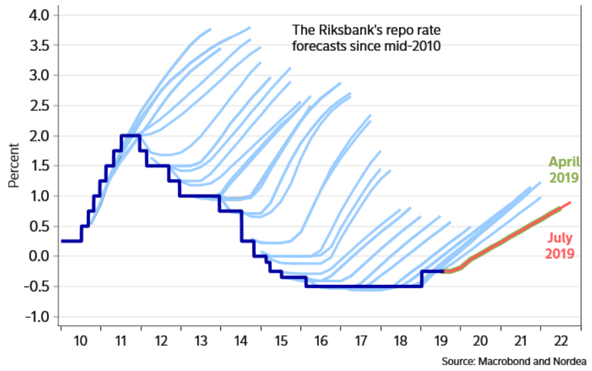Прогнозувати складно
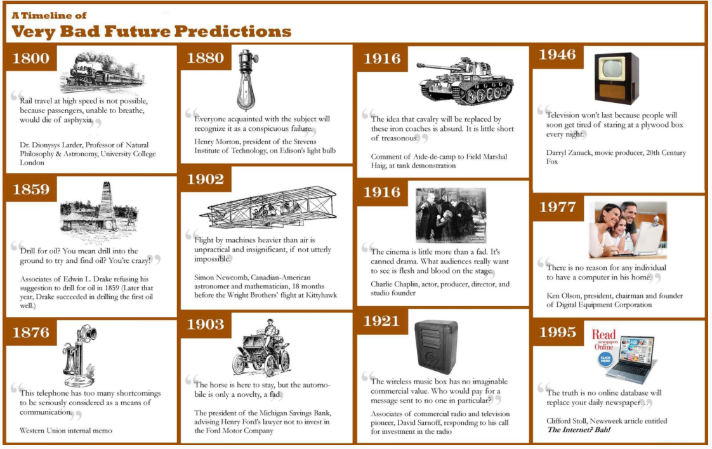Що можна прогнозувати?
Що можна прогнозувати?
Що можна прогнозувати?
Що можна прогнозувати?
Що можна прогнозувати?
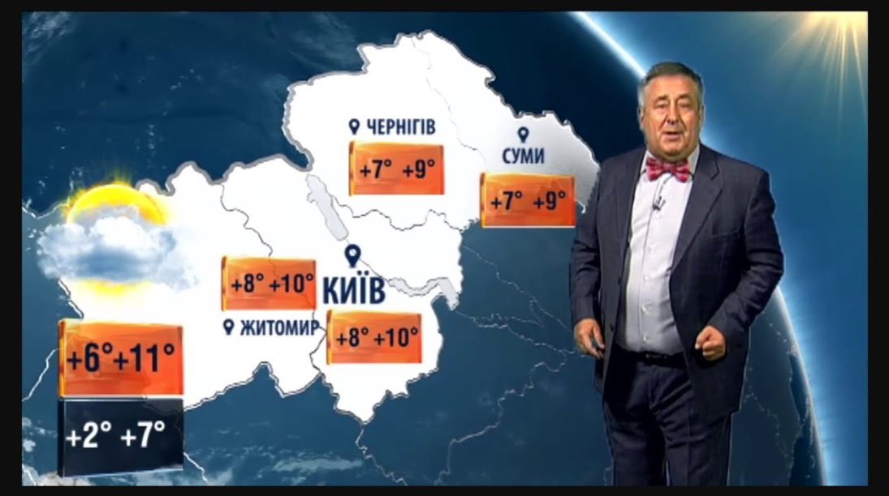Що можна прогнозувати?

Що можна прогнозувати?
Головні питання щодо складності?
Як визначтит “простоту” прогнозування?
Що впливає на простоту/складність прогнозування?
Фактори, що впливають на якість прогнозу
Щось легше спрогнозувати, якщо:
Ми добре розуміємо фактори, які цьому сприяють;
Є багато даних;
Майбутнє чимось схоже на минуле
Прогнози не можуть вплинути на те, що ми намагаємось передбачити.
Дані часових рядів
Найпростіші приклади
Річний прибуток Google
Щоквартальне виробництво пива
Щомісячні опади
Щотижневі роздрібні продажі
Щоденні ціни акцій IBM
Погодинний попит на електроенергію
Прогноз навантаження на автостради
Дані про транзакції за певний час
Щоквартальне виробництво пива
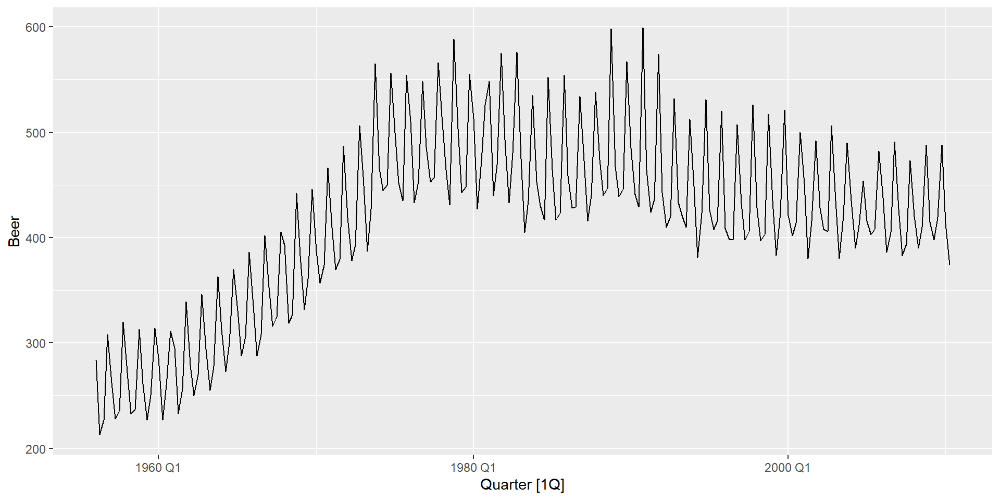Щоквартальне виробництво пива
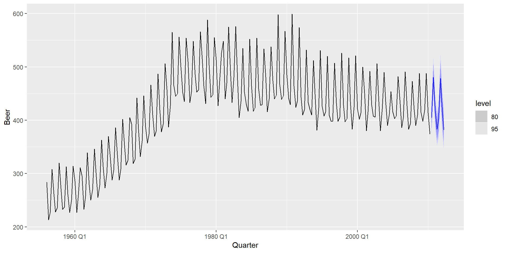Приклади досліджень
Приклад 1. Компанія з виробництва паперового посуду
Проблема: Хочемо будувати прогнозии для сотень найменувань. Часові ряди різні: стаціонарні, трендові, сезонні. Наразі є готовий софт з прогнозування, але результати виглядають незадовільними. Необхідно провести аналітику та визначити слабкі місця.
Додаткова інформація:
Програма, написана на COBOL, обмежує числові розрахунки. Неможливо здійснити оптимізацію.
Їх програміст має невеликий досвід чисельних обчислень.
Вони не наймають статистиків/аналітиків/дата-сайнтистів і хочуть, щоб програма автоматично створювала прогнози.
Приклад 1. Компанія з виробництва паперового посуду
Методи, що використовуються в даний час:
середнє за 12 місяців
середнє за 6 місяців
лінійна регресія за останні 12 місяців
лінійна регресія за останні 6 місяців
середня зміна між значеннями минулого та цього року
середня зміна між значеннями за 6 місяців
Приклад 2. Схема фармацевтичних переваг (PBS)
Це програма Уряд Австралії що субсидує ліки за рецептом для громадян Австралії та постійних мешканців, а також іноземних відвідувачів, на яких поширюється угода про взаємне медичне обслуговування.
Багато ліків, куплених в аптеках, субсидуються, щоб забезпечити більш справедливий доступ до сучасних ліків.
Витрати для уряду визначаються кількістю та видами придбаних ліків. В даний час майже 1 % ВВП.
Загальна вартість кошторису формується на основі прогнозів вживання ліків
Приклад 2. Схема фармацевтичних переваг (PBS)
У 2001 році: бюджет на $ 4,5 млрд., Прогноз на суму $ 800 млн.
Тисячі продуктів. Сезонний попит.
Прихований маркетингу, нестабільність продукції, неконтрольовані витрати.
Хоча щомісячні дані доступні за останні 10 років, дані узагальнюються до річних значень, і лише перші три роки використовуються для оцінки прогнозів.
Усі прогнози виконуються за допомогою функції ПРЕДСКАЗ у MS-Excel!
Приклад 4. Авіалінії
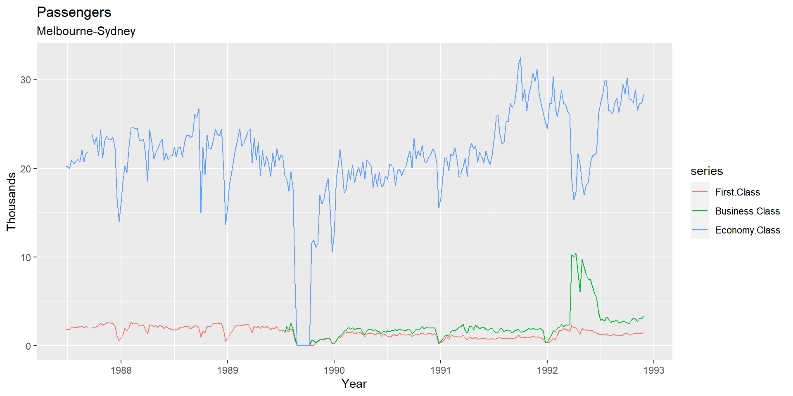Приклад 4. Авіалінії
Проблема: як спрогнозувати пасажиропотік на основних маршрутах?
Додаткова інформація: * Вони можуть надавати велику кількість даних про попередні маршрути.
На рух впливають шкільні канікули, спеціальні події, рекламні кампанії, поведінка конкурентів тощо.
У них досвідчена команда людей, які здатні робити більшість обчислень.
Основи статистичного прогнозування
Прості прогнози
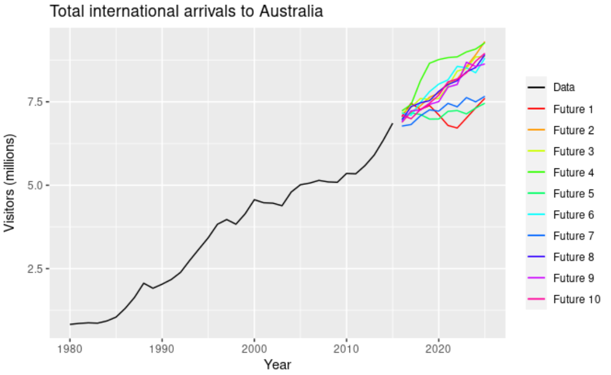Довірчі інтервали
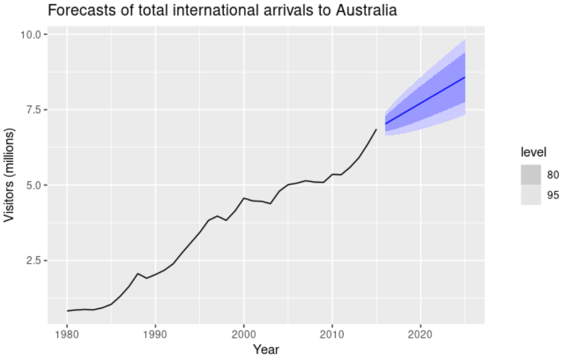Що слід згадати?
Що прогнозуємо: випадкова величина, \(y_t\).
Розподіл прогнозу: якщо \({\cal T}\) - це всі спостереження, то \(y_{t} | {\cal T}\) означає “випадкову змінну \(y_{t}\), враховуючи те, що ми знаємо в \({\cal T}\).
“Точковий прогноз” - це середнє значення (або медіана) \(y_{t}|{\cal T}\)
“Дисперсія прогнозу” - \(\text{var}[y_ {t}|{\cal T}]\)
Інтервал прогнозування або “інтервальний прогноз” - це діапазон значень \(y_t\) з високою ймовірністю.
З часовими рядами \({y}_{t|t-1} = y_t|\{y_1, y_2, \dots, y_{t-1}\}\).
\(\hat{y}_{T+h|T} =\text{E}[y_{T+h} | y_1,\dots,y_T]\) ( \(h\) -кроковий прогноз з урахуванням усіх спостережень до часу \(T\)).
R та RStudio
Мова програмування та IDE
Мова програмування
RStudio IDE
Встановлення софту та реєстрація
Якщо виникли питання на будь-якому кроці, звертайтесь.
Також рекомендую ознайомитись з інструкціями до Дженні Брайана - Happy Git and GitHub for the useR
Деякі доповнення для ОС
Я докладно розповім про додаткові вимоги до програмного забезпечення, коли виникне така потреба. Однак, щоб допомогти усунути деякі проблеми з встановленням програмного забезпечення, виконайте також наступне (залежно від вашої ОС):
Чому R та RStudio?
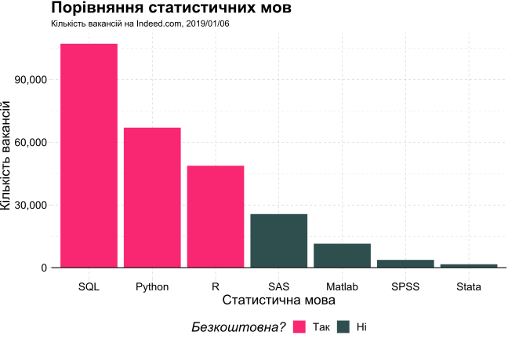Чому R та RStudio? (прод.)
Data science positivism
- Поряд з Python, R став де-факто мовою для науки про дані.
- З відкритим кодом (безкоштовно!) із великою базою користувачів, що охоплює наукові кола та промисловість.
- Компанії які використовують R: Amazon, Google, Meta, Twitter, Uber, Deloitte, Glovo…
Місток до прикладних сфер та інших інструментів
- Уже має підтримку всієї статистики та економетрики та дивовижно адаптується як «клей» до інших мов програмування та API.
- RStudio IDE та її екосистема забезпечують бездоганну інтеграцію.
Залежність
- Це мова яку я люблю та популяризую1.
Деякі основи R
Усе є об’єктом.
Усе має ім’я
Ви все робите за допомогою функцій.
Функції поставляються у попередньо створених пакетах, хоча ви можете — і повинні — також писати власні функції.
R приклад коду (лінійна регресія)
Базова візуалізація R
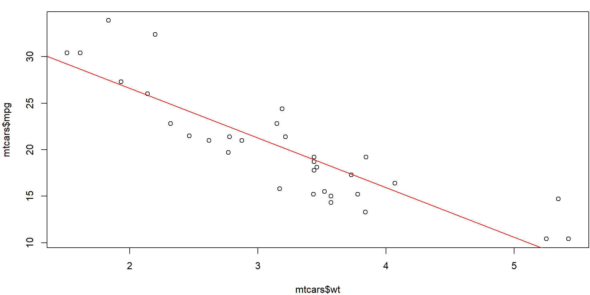ggplot2
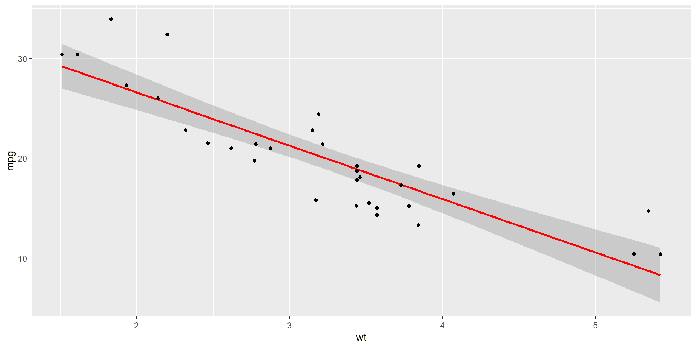ggplot2: Gapminder
Оскільки ми будемо будувати графік набору даних gapminder, корисно знати, що він містить панельні дані про тривалість життя, чисельність населення та ВВП на душу населення для 142 країн з 1950-х років.
# A tibble: 1,704 x 6
country continent year lifeExp pop gdpPercap
<fct> <fct> <int> <dbl> <int> <dbl>
1 Afghanistan Asia 1952 28.8 8425333 779.
2 Afghanistan Asia 1957 30.3 9240934 821.
3 Afghanistan Asia 1962 32.0 10267083 853.
4 Afghanistan Asia 1967 34.0 11537966 836.
5 Afghanistan Asia 1972 36.1 13079460 740.
6 Afghanistan Asia 1977 38.4 14880372 786.
7 Afghanistan Asia 1982 39.9 12881816 978.
8 Afghanistan Asia 1987 40.8 13867957 852.
9 Afghanistan Asia 1992 41.7 16317921 649.
10 Afghanistan Asia 1997 41.8 22227415 635.
# ... with 1,694 more rowsggplot2: Gapminder
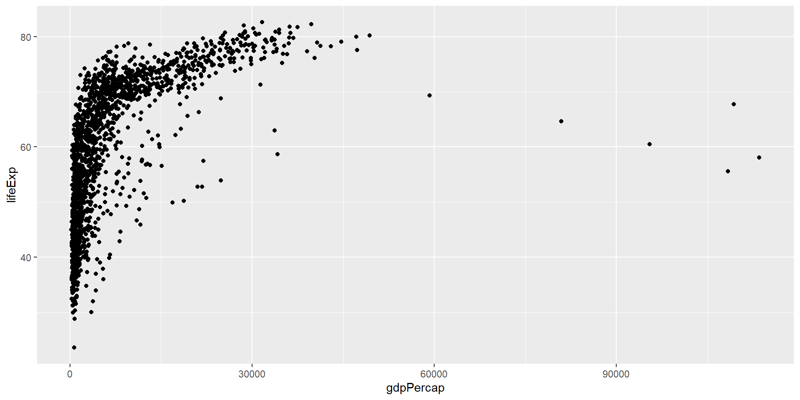ggplot2: Gapminder
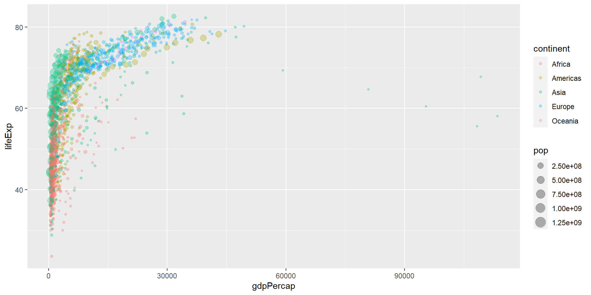ggplot2: Gapminder
ggplot(data = gapminder, aes(x = gdpPercap, y = lifeExp)) +
geom_point(aes(size = pop, col = continent), alpha = 0.3) +
scale_color_brewer(name = "Continent", palette = "Set1") + ## Інша плітра кольорів
scale_size(name = "Population", labels = scales::comma) + ## Інші позначки легенди
scale_x_log10(labels = scales::dollar) + ## Логарифмування на осі х. Використання знаку долара.
labs(x = "Log (GDP per capita)", y = "Life Expectancy") + ## Кращі підписи до осей
theme_minimal() ## Мінімалистична (ч/б) тема рисункуggplot2: Gapminder
library(hrbrthemes)
ggplot(data = gapminder, aes(x = gdpPercap, y = lifeExp)) +
geom_point(aes(size = pop, col = continent), alpha = 0.3) +
scale_color_brewer(name = "Continent", palette = "Set1") +
scale_size(name = "Population", labels = scales::comma) +
scale_x_log10(labels = scales::dollar) +
theme_modern_rc() +
geom_point(aes(size = pop, col = continent), alpha = 0.2)ggplot2: Gapminder
library(gganimate)
gapminder %>%
filter(continent != "Oceania") %>%
ggplot(aes(gdpPercap, lifeExp, size = pop, colour = country)) +
geom_point(alpha = 0.7, show.legend = FALSE) +
scale_colour_manual(values = country_colors) +
scale_size(range = c(2, 12)) +
scale_x_log10() +
facet_wrap(~continent) +
labs(title = 'Year: {frame_time}', x = 'Log (GDP per capita)', y = 'Life expectancy') +
transition_time(year) +
ease_aes('linear')